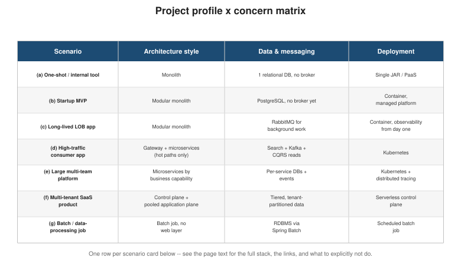

Starting a New Project: Which Path and Which Technologies
|
This content was generated with the assistance of AI and should be verified against the official documentation before being relied on in production. |
Every other page in this section answers a question about changing an existing Bookshop architecture — monolith or microservices, how to migrate, and so on. This page answers the question that comes before any of that: if Bookshop did not exist yet, what would you build, and with what? It starts with the profile questions every project should answer before writing a line of code, names one default path that fits most of them, then works through seven scenario cards — each a short story, a recommended architecture, a stack drawn only from technologies already documented on this site, and what to explicitly avoid.
Profile questions
Answer these before picking an architecture or a technology. None of them has a universally right answer; each one shifts the recommendation below.
| Question | Why it matters |
|---|---|
Expected size and domain complexity |
A handful of screens and business rules need a fraction of the structure a large, many-entity domain needs. |
Expected traffic — low, high, or bursty |
Steady low traffic tolerates a single instance; high or spiky traffic needs independent, elastic scaling somewhere in the stack. |
Lifetime — one-shot or long-term maintenance and evolution |
A prototype handed off and forgotten does not need the structure a codebase evolved for years does. |
Number of teams |
One team sharing one codebase has no coordination problem for microservices to solve; several autonomous teams might. |
Need for a public API, native apps, or several UIs |
More than one client pushes toward a clean, versioned API layer and a separate frontend from day one, per Layering: Isolating Backend and Frontend. |
Need for multi-tenancy |
Serving several independent customers from shared infrastructure is a different business model, not just a technical detail — see Migration Path: From Single-Tenant to Multi-Tenant SaaS. |
Compliance requirements |
Data residency, auditability, or regulatory isolation requirements can force specific deployment or partitioning choices regardless of what the traffic profile alone would suggest. |
Team skills and budget |
The best architecture on paper is the wrong one if the team cannot operate it, or the budget cannot sustain its operational cost. |
The default path
For the large majority of new projects, the default is: start as a modular monolith with a clean API layer, and add a separate frontend from day one when more than one client is expected. This is the same starting point Architectural Styles and Choosing: Monolith or Microservices? recommend for Bookshop itself: enforce module boundaries around business capabilities from the start, expose them behind one well-defined API, and resist splitting into separate deployables until a real signal justifies the operational cost.
Extract services only when one of the signals Choosing: Monolith or Microservices? names actually shows up — slowing build/test loops, capabilities that need independent scaling or release cadence, a genuine need for a different tech stack in one part of the system. Splitting earlier than that trades a monolith’s simplicity for a distributed system’s operational cost before anything justifies paying it.
The seven scenario cards below are what happens when the profile questions above pull a project away from this default — either because the default undersells the situation (a one-shot internal tool does not even need a full modular monolith) or because a real signal is already present on day one (a high-traffic consumer product, an enterprise platform, or a SaaS product change the calculus before the first commit).

Seven scenario cards
(a) Small one-shot project or internal tool
A team needs a small internal tool — an admin dashboard, a one-off data-entry app for a handful of users — that will be built quickly, used by a small audience, and is unlikely to be actively developed for years.
Recommended architecture: a plain monolith. No modules, no API layer separate from the UI, no independent deployability to exercise — speed of delivery matters far more than architectural purity here.
Stack:
-
A server-rendered UI via Thymeleaf, or a small SPA with React or Vue if the UI needs meaningfully more interactivity than server rendering comfortably gives.
-
One relational database, sized and operated per Choosing the Right Database.
-
A single JAR or container, or a PaaS deployment — see Deployment below.
What to explicitly not do: no message broker (neither Kafka nor RabbitMQ earns its operational cost here), no Kubernetes — a single running instance is enough traffic headroom for an internal tool, and the orchestration overhead would dwarf the application itself.
(b) Startup MVP that must evolve fast
A startup is validating a product idea and needs to ship an MVP quickly, while keeping the door open to pivot the product, add a mobile app, and scale traffic once something proves out — all without a rewrite.
Recommended architecture: a modular monolith behind a REST API, with a separate frontend from day one so a native app can be added later without re-architecting the backend — the same reasoning Layering: Isolating Backend and Frontend gives for splitting backend and frontend as soon as more than one client is plausible.
Stack:
-
A modular Spring Boot backend exposing a REST API (see API-First Development: REST and gRPC for a contract-first starting point).
-
React, Angular, or Vue for the web client, chosen per the team’s own familiarity — any of the three keeps a native app buildable against the same REST API later.
-
PostgreSQL as the default relational store for a domain that is still being discovered.
-
A container deployed to a managed platform (see Deployment), so the team is not also operating raw infrastructure while iterating on the product.
-
Feature flags to decouple deploying code from releasing it to users — essential once the team is shipping fast and needs to de-risk each release.
What to explicitly not do: do not extract services yet — the MVP’s domain boundaries are, by definition, not proven; per Richardson (quoted in Choosing: Monolith or Microservices?), "a startup should almost certainly begin with a monolithic application."
(c) Long-lived line-of-business application for one organisation
A single organisation needs an application it will run and evolve for years — an internal ERP-adjacent system, a case-management tool, an operations platform — built by a small, stable team, with real background processing and real users who need to sign in securely.
Recommended architecture: a modular monolith, with module boundaries enforced by the framework itself rather than left to convention.
Stack:
-
Spring Boot with Spring Modulith enforcing module boundaries at build time, or Quarkus if fast startup and low memory footprint matter more than the wider Spring ecosystem.
-
RabbitMQ for background work — report generation, scheduled reconciliation jobs, notification fan-out — where task-queue semantics fit better than an event log.
-
OAuth/OIDC for authentication, most likely delegated to the organisation’s existing identity provider rather than a home-grown login system.
-
Metrics, tracing, and observability wired in from day one — a long-lived application accumulates operational blind spots quickly if this is left for later.
What to explicitly not do: do not reach for microservices because the application is "important" — importance and longevity are not, by themselves, signals to split; a single autonomous team with a stable domain is exactly the profile Choosing: Monolith or Microservices? recommends keeping as one deployable.
(d) High-traffic consumer application
A consumer-facing product — a storefront, a media or content platform — expects high, spiky traffic against a handful of hot paths (search, catalogue browsing, checkout), while most of the rest of the system sees ordinary load.
Recommended architecture: an API gateway or backend-for-frontend at the edge, with microservices extracted only for the hot paths — not a wholesale microservices rewrite of the entire product.
Stack:
-
API Gateway and Backends for Frontends at the edge, routing to the monolith for ordinary traffic and to extracted services for the hot paths.
-
Search on Elasticsearch or Solr — see Solr vs. Elasticsearch/OpenSearch for which one fits.
-
A catalogue cache (Caffeine locally, Redis distributed — see the Redis Reference) to keep read-heavy browsing traffic off the primary database.
-
Order and payment flows implemented as Sagas, the same compensating-transaction pattern Bookshop’s own extraction uses in Migration Path: From a Monolith to Microservices.
-
Kafka as the event backbone connecting the extracted hot-path services.
-
Kubernetes for the extracted services, so the hot paths scale independently of the rest of the system (see Kubernetes and OpenShift for one concrete deployment target).
-
CQRS read models for the query-heavy views (product listings, order history) that would otherwise hammer the write-side schema.
What to explicitly not do: do not turn every capability into a microservice just because the product is high-traffic — capabilities without a scaling, fault-isolation, or team-autonomy reason to split are still better off inside the monolith, per Choosing: Monolith or Microservices?.
(e) Large multi-team enterprise platform
Several autonomous teams need to build and release independently against a shared domain, each team owning a slice of the business capability, with multiple client types (web, mobile, partner integrations) consuming the platform.
Recommended architecture: microservices organized by business capability from the start, not extracted later — this is the one scenario where the operational prerequisites for microservices (Fowler’s MicroservicePrerequisites) are worth investing in up front, because the team-autonomy problem microservices solve is already present on day one.
Stack:
-
Services split by business capability, following the same decomposition reasoning Migration Path: From a Monolith to Microservices applies to Bookshop, just designed in rather than extracted later.
-
API-first contracts between services, authored with OpenAPI or Protocol Buffers before implementation starts, so teams can build against each other’s contracts in parallel.
-
A gateway plus a backend-for-frontend per client type — one BFF for the web app, one for mobile, one for partner integrations — instead of one generic API trying to serve all three well.
-
Event-driven integration between services, using Domain Events to keep services loosely coupled rather than chaining synchronous calls.
-
A database per service, per Choosing the Right Database applied independently to each service’s own data shape.
-
Distributed tracing from day one (Micrometer Tracing and OpenTelemetry) — with this many services, a request’s path through the system is unreadable without it.
What to explicitly not do: do not let "enterprise" justify skipping API-first contracts or shared observability — those are what keep several autonomous teams' services interoperable and debuggable; without them, this scenario degenerates into a distributed monolith, one of the five pitfalls Migration Overview warns every migration path about.
(f) Multi-tenant SaaS product
A product will be sold to many independent customer organisations (tenants) from shared infrastructure, with tiering, per-tenant billing, and the operational need to onboard new tenants without manual work.
Recommended architecture: control plane first, pooled application plane — the same architecture Migration Path: From Single-Tenant to Multi-Tenant SaaS describes in depth for Bookshop’s own move to SaaS. For a brand-new project, this means building onboarding, identity, and tenant management before most application features, not after.
Stack:
-
A control plane covering onboarding, identity, tenant management, billing, and metrics, built first per Migration Path: From Single-Tenant to Multi-Tenant SaaS.
-
A pooled application plane by default, with tiering (a premium siloed tier, if the business model needs one) layered on top rather than baked into the base architecture.
-
Serverless compute for the control plane specifically — its traffic is typically low and bursty (an onboarding event, an admin action) compared to the application plane’s steady load, which is exactly the profile serverless suits best; see the serverless caveat under Deployment before applying the same choice to the application plane’s JVM services.
What to explicitly not do: do not start with the application plane’s features and treat tenancy as something to add later — every guiding principle on the SaaS migration page warns against exactly this; multi-tenancy retrofitted after the fact costs far more than multi-tenancy designed in from the first service.
(g) Batch or data-processing job
A recurring job needs to process a bounded batch of data — a nightly reconciliation run, a data export, an ETL/reporting pipeline — with no interactive users and no need for a web layer at all.
Recommended architecture: a dedicated batch application with no web layer whatsoever — not a web application with a scheduled endpoint bolted on.
Stack:
-
Spring Batch for the Job/Step/chunk-oriented processing model, fault tolerance (skip/retry), and restart semantics a real batch workload needs.
-
Whatever relational or file-based source and target the job reads from and writes to, chosen per Choosing the Right Database.
What to explicitly not do: do not stand up a Spring MVC or REST layer just to trigger the job on a schedule — a batch application does not need to accept HTTP requests to run; a scheduler invoking the job process directly is simpler and has less to secure and operate.
Cross-cutting recommendation tables
The scenario cards above combine these building blocks; the tables below make each individual choice explicit, independent of which scenario it is used in.
Backend framework
| Choice | When |
|---|---|
The default for most JVM backends — the widest ecosystem covered on this site (data access, messaging, security, batch, observability). |
|
Fast startup and low memory footprint matter — containers that need to scale to zero, or serverless JVM deployments (see Deployment). |
|
Either runs on Spring Boot; Kotlin trades some ecosystem friction for null safety and less boilerplate — see the linked comparison for the full trade-off. |
|
Python / Django |
A full-stack, server-rendered web application, an admin-heavy back office or a content site, where Django’s ORM, admin, forms, auth and templates save the most work — see Django, including REST APIs with Django REST framework. |
Python / FastAPI |
A team already standardized on Python, or building a service that leans on Python’s data/ML ecosystem — see Python: Getting Started for the GraphQL-specific starting point, and Python FastAPI for the framework itself. |
Python / Flask, Tornado or Pyramid |
A Python team that wants a small, unopinionated WSGI core and picks its own components (Flask, Pyramid), or a service built around long-lived connections and non-blocking I/O (Tornado) — see Python Flask, Python Tornado and Python Pyramid. |
PHP / Laravel |
A PHP team or PHP hosting, building a full-stack web application or a REST/JSON:API backend with queues, scheduling and real-time features included — see PHP and Laravel. |
TypeScript / NestJS |
A team already standardized on TypeScript or Node.js, or sharing types and tooling with a TypeScript front end — see NestJS for the framework, with modules, dependency injection and first-class REST, GraphQL, WebSocket and microservice support. |
JavaScript / TypeScript on Node.js (built-ins, Express, Fastify) |
A small service, CLI or API where Node’s built-in HTTP, test runner and SQLite are enough, or a team that prefers a minimal framework over NestJS’s structure — see Node.js for the runtime and its built-ins, Web Frameworks: Express & Fastify, and the Express.js section. |
Rust / Axum |
A team that needs predictable latency, low memory and high throughput, or already writes Rust; API backends, real-time services and server-rendered htmx apps — see Axum for the framework and the Rust Reference for the language. |
Go / net/http |
A team that wants a single static binary, fast builds and a small language, or builds infrastructure, cloud-native and network services; JSON APIs on the standard library’s |
Swift / Vapor |
A team that already writes Swift for Apple platforms and wants one language and shared models end to end; JSON APIs for iOS and macOS apps, APNs senders and server-rendered Leaf sites — see Swift Vapor for the framework and the Swift Reference for the language. |
API style
| Choice | When |
|---|---|
REST |
The default for most public and internal APIs — broad tooling support and the simplest mental model for consumers. |
GraphQL |
Clients need to compose data from several resources in one round trip, or different clients need meaningfully different shapes of the same data — see When to Use GraphQL or a Typical REST API for the full trade-off, including its query-plan cost caveat. |
gRPC |
Service-to-service calls where performance and a strict contract matter more than human-readability — see API-First Development: REST and gRPC. |
Messaging
| Choice | When |
|---|---|
None |
Synchronous calls are sufficient — most small and mid-sized applications never need a broker at all. |
An event backbone or a task queue is genuinely needed — see the linked comparison for which one fits: Kafka for high-throughput event streams and replay, RabbitMQ for flexible routing and traditional task-queue semantics. |
Database
| Choice | When |
|---|---|
Always the starting point — covers relational, document, search, vector, graph, key-value, wide-column, time-series, and OLAP categories, and how to keep several of them consistent once more than one is in play. |
Frontend
| Choice | When |
|---|---|
More than one client is expected (web plus native apps later), or the UI needs client-side interactivity a server-rendered page cannot comfortably give. |
|
A single team owns both backend and UI and prefers staying in one language end to end (Vaadin, Blazor) or the UI is simple enough that server-rendered templates (Thymeleaf) are the least amount of moving parts. |
|
Jakarta Faces (JSF) / PrimeFaces |
Maintaining or extending an existing Jakarta EE application, or a component-rich internal back-office UI on a Jakarta EE stack. |
Bootstrap for a component-driven UI that needs to look consistent quickly; Tailwind for fine-grained, utility-first control over a custom design system. |
Mobile
| Choice | When |
|---|---|
A native Android app is needed and the team can invest in a platform-specific codebase. |
|
A native app is needed for iOS, iPadOS, macOS, watchOS or visionOS (SwiftUI, one multiplatform codebase across Apple devices), same trade-off as Android above. |
|
React Native (or Flutter) |
One codebase across Android and iOS is worth more than native-platform fidelity. React Native is documented on this site; Flutter is not. Evaluate against the native options above based on the team’s existing skills — a team already fluent in React and TypeScript carries most of that knowledge across. |
Authentication
| Choice | When |
|---|---|
The default for any API or application needing delegated authorization or federated sign-in — covers every grant type and the current security best practices. |
|
A backend-for-frontend for SPAs |
A browser-based single-page app needs tokens — see Browser-Based Apps (SPAs) for why a BFF, not the browser itself, should hold the tokens. |
Deployment
| Stage | When |
|---|---|
Single process |
A one-shot or internal tool with low, steady traffic — see (a) Small one-shot project or internal tool above. |
Container |
Anything beyond a single process benefits from a container’s reproducible runtime and the option to move to a managed platform later without re-packaging. |
Managed container platform |
A small team wants container benefits without operating the orchestration layer itself — the sweet spot for most startup MVPs ((b) Startup MVP that must evolve fast). |
Kubernetes |
Several services need independent scaling, rollout, and placement control — earns its operational cost once there is more than one or two services to orchestrate, per (d) High-traffic consumer application and (e) Large multi-team enterprise platform. |
Serverless |
Bursty, low-baseline traffic where paying only for actual invocations beats keeping an instance warm — the control plane in (f) Multi-tenant SaaS product is the clearest fit. Caveat: cold starts inflict a long-tail latency penalty on JVM services in particular; Quarkus native executables (via GraalVM/Mandrel ahead-of-time compilation) are the standard mitigation when a JVM service must run serverless, trading a longer, heavier build for near-instant startup. See also Serverless and Cloud Functions for the concrete deployment options. |
For taking these deployment choices onto Google Cloud, including migration paths and multicloud trade-offs, see Architecture, Migration and Multicloud.